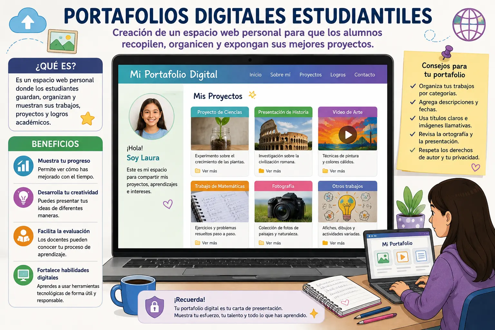

Portafolios digitales estudiantiles
Introducción
Los portafolios digitales estudiantiles son espacios en internet donde los alumnos pueden guardar, organizar y mostrar los trabajos que realizan durante su proceso educativo. En ellos se pueden incluir documentos, presentaciones, imágenes, videos, proyectos y otros materiales que representen el esfuerzo y los conocimientos adquiridos. Esta herramienta permite tener los trabajos organizados en un solo lugar y facilita su consulta cuando sea necesario.
Una de las principales ventajas de un portafolio digital es que permite mostrar el progreso del estudiante con el paso del tiempo. En lugar de conservar los trabajos únicamente en cuadernos o carpetas físicas, se pueden almacenar de manera digital y consultar desde diferentes dispositivos. Así, el estudiante puede observar cómo han mejorado sus conocimientos y habilidades a medida que avanza en sus estudios.
Para crear un portafolio digital es importante organizar la información de manera clara. Se pueden establecer diferentes secciones para separar los proyectos, tareas, actividades y trabajos destacados. También es recomendable colocar títulos, fechas y pequeñas descripciones para explicar qué se realizó en cada proyecto y cuál fue el aprendizaje obtenido.
Estos portafolios también ayudan a desarrollar la creatividad de los estudiantes. Cada persona puede decidir cómo presentar sus trabajos, utilizando imágenes, textos, videos, enlaces y otros recursos digitales. Esto permite que el portafolio no sea solamente un lugar para guardar tareas, sino también una forma de expresar las ideas y demostrar las habilidades personales.
Otra ventaja es que los docentes pueden utilizar los portafolios para evaluar el proceso de aprendizaje. En lugar de observar solamente el resultado final de una actividad, pueden revisar diferentes trabajos realizados durante un periodo. Esto permite conocer las dificultades, los avances y el esfuerzo que ha realizado cada estudiante.
Además, un portafolio digital puede ayudar a los estudiantes a adquirir habilidades tecnológicas importantes. Al organizar archivos, crear páginas, insertar imágenes o compartir proyectos, aprenden a utilizar diferentes herramientas digitales de manera responsable. Estas habilidades pueden ser útiles tanto durante la etapa escolar como en futuros estudios y actividades laborales.
Es importante que los estudiantes tengan cuidado con la información que publican en sus portafolios. No es recomendable compartir datos personales, contraseñas o información privada. También deben respetar los derechos de autor cuando utilizan imágenes, textos, videos u otros materiales creados por otras personas. De esta manera, el portafolio puede ser un espacio creativo, pero también seguro y responsable.
En conclusión, los portafolios digitales son una herramienta útil para recopilar, organizar y presentar los trabajos de los estudiantes. Permiten observar el progreso académico, desarrollar la creatividad y fortalecer las habilidades tecnológicas. Cuando se utilizan correctamente, pueden convertirse en una especie de archivo personal de aprendizaje que demuestra el esfuerzo y los conocimientos adquiridos durante la formación académica.
